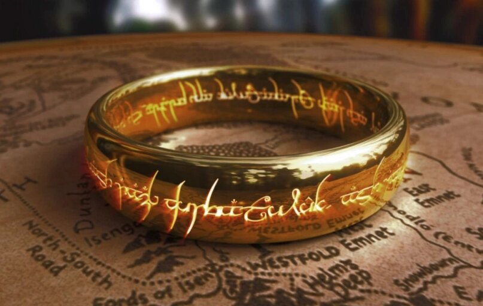
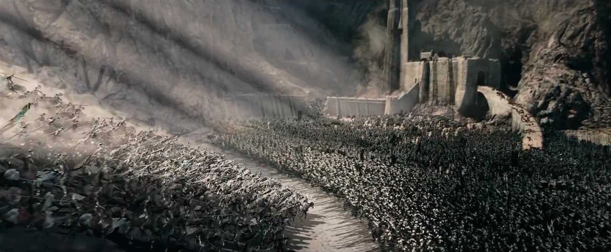

Historia
La Guerra del Anillo fue un acontecimiento que enfrentó a Sauron y la gente libre de la Tierra Media
buscando el control del Anillo Único, y su consecuente dominio sobre el continente. Tuvo lugar al final de la Tercera Edad.
Junto con la búsqueda del Monte Destino, es uno de los eventos globales de El Señor de los Anillos.
La guerra fue iniciada por Sauron, que cobró fuerza al final de la Tercera Edad del Sol y buscó el Anillo
Único. En esta guerra, varios centenares de los hombres de Rohan y de Gondor fueron asesinados. El recuento total de
combatientes se cifra en más de un millón: decenas de miles de la Gente Libre y centenares de miles del lado Maligno.
La guerra también supuso el declive del poder de los elfos en la Tierra Media, el auge de los hombres en el oeste, la
restauración del reino de Gondor y Arnor y el inicio de la Cuarta Edad.

